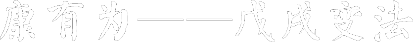

一起来看看！康有为——戊戌变法
康有为(1858年3月19日～1927年3月31日)，又名祖诒，字广厦，号长素，又号长素、明夷、更甡、西樵山人、游存叟、天游化人，晚年别署天游化人，广东南海人，人称“康南海”，清光绪年间进士，官授工部主事。
康有为出生于封建官僚家庭，祖父康赞修是道光年间的举人，父亲康达初做过江西补用知县。康有为自幼学习儒家思想，1879年开始接触西方文化。1882年，康有为到北京参加顺天乡试，没有考取。南归时途经上海，购买了大量西方书籍，吸取了西方传来的进化论和政治观点，初步形成了维新变法的思想体系。
1888年，康有为再一次到北京参加顺天乡试，借机第一次上书光绪帝，请求变法，受阻未上达。1891年后，他在广州设立万木草堂，收徒讲学，弟子有梁启超、陈千秋等人。
1895年，他到北京参加会试，得知《马关条约》签订，联合1300多名举人，上万言书，即“公车上书”，又未上达。当年5月底，他第三次上书，得到了光绪帝的赞许。7月，他和梁启超创办《中外纪闻》，不久又在北京组织强学会。
1897年，德国强占胶州湾，康有为再次上书请求变法。次年1月，光绪皇帝下令康有为条陈变法意见，他呈上《应诏统筹全局折》，又进呈所著《日本明治变政考》、《俄罗斯大彼得变政记》二书。4月，他和梁启超组织保国会，号召救国图强。6月16日，光绪帝在颐和园勤政殿召见康有为，任命他为总理衙门章京，准其专折奏事，筹备变法事宜，史称戊戌变法。后因慈禧太后的干预，维新运动失败，其具体细节目前尚有较大争议。
变法失败后，光绪皇帝被软禁，康有为之弟康广仁被杀，康有为逃往日本，自称持有皇帝的衣带诏，组织保皇会，鼓吹开明专制，反对革命。为获得国际支持，他曾游历列国，会见欧洲各国君主。
辛亥革命后，康有为于1913年回国，主编“不忍”杂志，宣扬尊孔复辟。作为保皇党领袖，他反对共和制，一直谋划清废帝溥仪复位。1917年，康有为和效忠前清的北洋军阀张勋发动复辟，拥立溥仪登基，不久即在当时北洋政府总理段祺瑞的讨伐下宣告失败。
康有为晚年始终宣称忠于清朝，溥仪被冯玉祥逐出紫禁城后，他曾亲往天津，到溥仪居住的静园觐见探望。1927年，康有为病死于青岛。
康有为以其所处的时代，先行看到了国家的危机，并进行了大胆尝试，为孙文领导的辛亥革命做了实践上的指导。